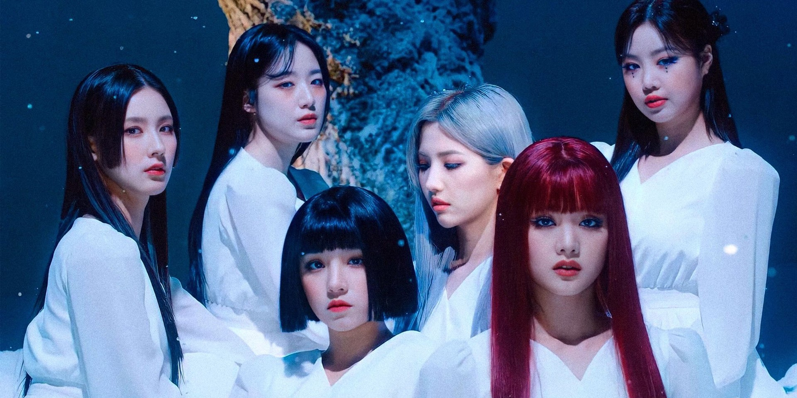

(G)I-DLE (아이들 / [여자]아이들) currently consists of 5 members: Soyeon, Miyeon, Minnie, Yuqi and Shuhua. They officially debuted on May 2nd, 2018 under Cube Entertainment. Soojin left the group on August 14th, 2021.

(G)I-DLE Profile And Facts
April 21, 2022
Catch Up on the Latest Updates on (G)I-DLE!
(G)I-dle (Korean: (여자)아이들; RR: Yeoja Aideul), stylized in all caps, is a South Korean girl group formed by Cube Entertainment in 2018. The group consists of five members: Miyeon, Minnie, Soyeon, Yuqi and Shuhua.[1] Originally a sextet, Soojin left the lineup on August 14, 2021.[2] (G)I-dle debuted on May 2, 2018, with the single "Latata" from their first extended play (EP) I Am. They debuted in Japan under U-Cube[3] with Latata on July 31, 2019.
After signing with Republic Records in the United States in 2020, the group released their third EP I Trust,[4] which made them only the fourth girl group to sell 100,000 copies of an album in its first week.[5] Their 2020 single album Dumdi Dumdi became the second best-selling single album by a girl group of all time.[6] Since their debut, (G)I-dle have released one studio album and six EPs, as well as singles such as "Latata", "Hann (Alone)", "Senorita", "Uh-Oh", "Lion", "Oh My God", "Dumdi Dumdi", "Hwaa" and "Tomboy".
Unlike most K-pop girl groups, (G)I-dle are directly involved in the creation of their music; in particular, Soyeon has helped write and produce a majority of the group's songs, and Minnie and Yuqi have also co-written numerous album tracks.[7] Dubbed "monster rookies" of 2018, (G)I-dle have since been considered one of the most successful South Korean girl groups from outside of the "big three" record labels.